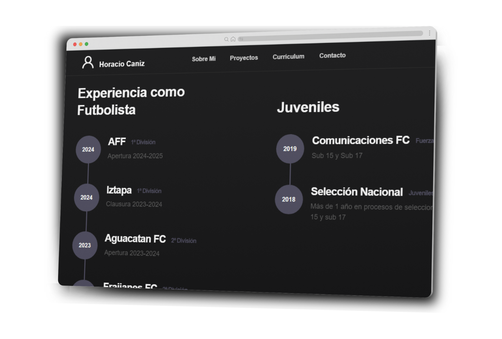
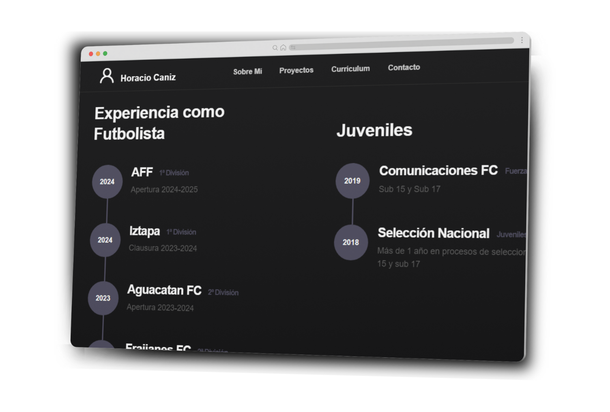

Portafolio de Venweb: Diseño y Desarrollo de Portafolio para freelancer
 

Portafolio Profesional para Horacio Caniz
En Venweb, tuvimos el privilegio de colaborar con Horacio Caniz, un destacado profesional del mundo del desarrollo de software y la futbolista profesional. El objetivo de este proyecto fue crear una página web que reflejara su identidad, talento y portafolio de trabajos, mientras ofrecía una experiencia de usuario intuitiva y visualmente impactante.
Lo que hicimos:
Diseño personalizado: Creamos un diseño limpio, moderno y visualmente atractivo que captura la esencia de Horacio Caniz como creativo. El sitio refleja su estilo único y permite a los usuarios explorar su trabajo con facilidad.
El equipo de Venweb superó mis expectativas al crear un portafolio digital profesional y funcional. Su atención al detalle y su capacidad para entender mis necesidades fueron clave para lograr una página que refleja perfectamente mi trabajo. Ahora, mis clientes tienen una experiencia fluida y visualmente impactante. ¡Totalmente recomendados!

Horacio Caniz
Freelancer
Portafolio interactivo: Desarrollamos una sección de portafolio dinámica que muestra los trabajos de Horacio de manera interactiva. Cada proyecto es presentado con detalles, imágenes de alta calidad y descripciones que ayudan a los visitantes a comprender mejor el proceso creativo.
Optimización SEO: Implementamos una estrategia de optimización SEO para asegurar que Horaciocaniz.site sea fácilmente encontrado en los motores de búsqueda por personas interesadas en diseño gráfico y servicios creativos.
Optimización para móviles y rendimiento: Nos aseguramos de que el sitio estuviera completamente optimizado para dispositivos móviles y tuviera un rendimiento rápido, garantizando que los usuarios tuvieran una experiencia fluida en cualquier dispositivo.
Información del proyecto
- Categoria Portafolio Digital
- Cliente Horacio Caniz
- Fecha del proyecto 05 Mayo, 2024
- URL del proyecto www.horaciocaniz.site
- Visitar Sitio Web